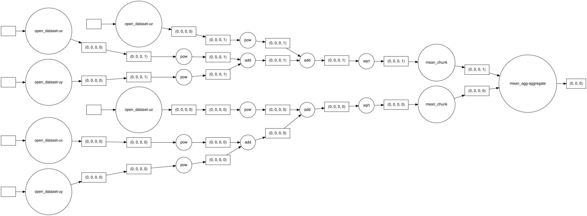
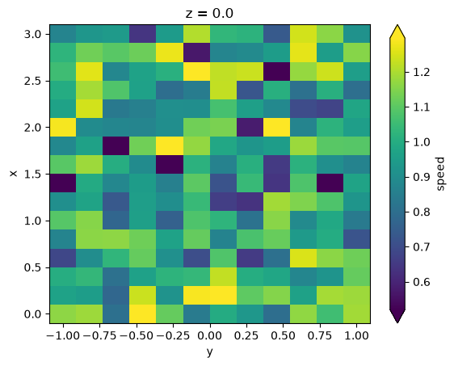

Read Binary Files Lazily With Xarray and Dask#
This notebook shows the main xarray-binfile workflow:
describe a binary-file convention with
FileSpecsGetteropen individual files or a whole collection with
engine="binfile"keep the resulting arrays lazy and Dask-backed
inspect the task graph before executing a calculation
call
.compute()only when you want concrete results in memory
import pathlib
import re
import tempfile
from shutil import which
import numpy as np
import xarray as xr
from IPython.display import Markdown, display
import xarray_binfile # noqa: F401 (registers the .binary_engine accessors)
from xarray_binfile.tutorial import DatasetGenerator, FileSpecsGetter
temporary_directory = tempfile.TemporaryDirectory()
data_directory = pathlib.Path(temporary_directory.name)
data_directory
PosixPath('/tmp/tmphtyot6f8')
base_coords = {
"x": np.linspace(0.0, 3.0, num=16, dtype=np.float32),
"y": np.linspace(-1.0, 1.0, num=12, dtype=np.float32),
"z": np.linspace(0.0, 2.0, num=8, dtype=np.float32),
}
file_specs_getter = FileSpecsGetter(
base_coords=base_coords,
dtype=np.float32,
filename_template="{name}-{digits:04}.bin",
filename_regex=re.compile(r"(?P<name>\w+)-(?P<digits>\d{4})\.bin"),
)
dataset_generator = DatasetGenerator(file_specs_getter.reader)
filenames = (
file_specs_getter.filename_template.format(name=name, digits=step)
for name in ("ux", "uy", "uz")
for step in range(2)
)
source_dataset = dataset_generator(map(pathlib.Path, filenames))
source_dataset.binary_engine.to_file(file_specs_getter.writer, data_directory)
sorted(path.name for path in data_directory.glob("*.bin"))[:6]
['ux-0000.bin',
'ux-0001.bin',
'uy-0000.bin',
'uy-0001.bin',
'uz-0000.bin',
'uz-0001.bin']
Open one file#
The backend can read a single raw binary file into a small Dataset. The metadata getter supplies the dtype, coordinates, and variable name that the binary file itself does not store.
single_dataset = xr.open_dataset(
sorted(data_directory.glob("ux-*.bin"))[0],
engine="binfile",
read_specs_getter=file_specs_getter.reader,
)
single_dataset
<xarray.Dataset> Size: 6kB
Dimensions: (x: 16, y: 12, z: 8, time: 1)
Coordinates:
* x (x) float32 64B 0.0 0.2 0.4 0.6 0.8 1.0 ... 2.0 2.2 2.4 2.6 2.8 3.0
* y (y) float32 48B -1.0 -0.8182 -0.6364 -0.4545 ... 0.6364 0.8182 1.0
* z (z) float32 32B 0.0 0.2857 0.5714 0.8571 1.143 1.429 1.714 2.0
* time (time) int64 8B 0
Data variables:
ux (x, y, z, time) float32 6kB ...Open many files lazily#
xr.open_mfdataset combines the files by coordinates and keeps the arrays lazy because we pass Dask chunks. The example data here is intentionally small enough for a fast docs build, but the same chunked pattern is the one you use when the full dataset no longer fits comfortably in memory.
lazy_dataset = xr.open_mfdataset(
sorted(data_directory.glob("*.bin")),
engine="binfile",
read_specs_getter=file_specs_getter.reader,
chunks={"time": 1},
parallel=True,
)
lazy_dataset
<xarray.Dataset> Size: 37kB
Dimensions: (x: 16, y: 12, z: 8, time: 2)
Coordinates:
* x (x) float32 64B 0.0 0.2 0.4 0.6 0.8 1.0 ... 2.0 2.2 2.4 2.6 2.8 3.0
* y (y) float32 48B -1.0 -0.8182 -0.6364 -0.4545 ... 0.6364 0.8182 1.0
* z (z) float32 32B 0.0 0.2857 0.5714 0.8571 1.143 1.429 1.714 2.0
* time (time) int64 16B 0 1
Data variables:
ux (x, y, z, time) float32 12kB dask.array<chunksize=(16, 12, 8, 1), meta=np.ndarray>
uy (x, y, z, time) float32 12kB dask.array<chunksize=(16, 12, 8, 1), meta=np.ndarray>
uz (x, y, z, time) float32 12kB dask.array<chunksize=(16, 12, 8, 1), meta=np.ndarray>ux = lazy_dataset["ux"]
print(type(ux.data))
print(ux.chunks)
print(
f"Estimated in-memory size if fully loaded: {lazy_dataset.nbytes / 1024**2:.2f} MiB"
)
ux.data
<class 'dask.array.core.Array'>
((16,), (12,), (8,), (1, 1))
Estimated in-memory size if fully loaded: 0.04 MiB
|
||||||||||||||||
The dask.array representation is the important part here. At this stage the notebook has built a task graph, not loaded every chunk into memory. That is what lets the same workflow scale to much larger datasets.
lazy_speed = np.sqrt(
lazy_dataset["ux"] ** 2 + lazy_dataset["uy"] ** 2 + lazy_dataset["uz"] ** 2
).rename("speed")
lazy_mean_speed = lazy_speed.mean(dim="time")
lazy_mean_speed
<xarray.DataArray 'speed' (x: 16, y: 12, z: 8)> Size: 6kB dask.array<mean_agg-aggregate, shape=(16, 12, 8), dtype=float32, chunksize=(16, 12, 8), chunktype=numpy.ndarray> Coordinates: * x (x) float32 64B 0.0 0.2 0.4 0.6 0.8 1.0 ... 2.0 2.2 2.4 2.6 2.8 3.0 * y (y) float32 48B -1.0 -0.8182 -0.6364 -0.4545 ... 0.6364 0.8182 1.0 * z (z) float32 32B 0.0 0.2857 0.5714 0.8571 1.143 1.429 1.714 2.0
Visualize the Dask task graph#
This graph represents the operations that will be executed when the result is finally computed. It is still a plan at this point, not a loaded array.
The dataset here is deliberately small so the graph stays readable. Real workloads produce much larger graphs with the same overall shape: read each chunk, combine the chunks, then reduce.
if which("dot"):
display(lazy_mean_speed.data.visualize(rankdir="LR", format="svg", filename=None))
else:
display(
Markdown(
"Graphviz is not available in this environment, so the task graph image cannot be rendered here. "
"The published documentation installs Graphviz and renders this cell as an SVG task graph."
)
)

Execute the calculation#
Calling .compute() turns the lazy Dask graph into actual work and materializes the final result in memory.
computed_mean_speed = lazy_mean_speed.compute()
computed_mean_speed
<xarray.DataArray 'speed' (x: 16, y: 12, z: 8)> Size: 6kB
array([[[1.1639009 , 1.1528444 , 1.4970746 , ..., 1.0305072 ,
0.52309537, 1.0188668 ],
[1.1832976 , 0.88838655, 1.1468114 , ..., 1.0329845 ,
1.1886969 , 0.72647655],
[0.80343336, 1.1319138 , 1.0971985 , ..., 1.1030972 ,
0.68899465, 1.0475776 ],
...,
[1.1683881 , 0.5017474 , 0.82659507, ..., 0.921956 ,
1.0446327 , 0.9948372 ],
[1.0580311 , 0.98171306, 0.9403765 , ..., 0.9665396 ,
1.1081386 , 0.9452532 ],
[1.1870573 , 0.9506662 , 0.99852407, ..., 0.44320196,
1.0672505 , 0.7161483 ]],
[[0.9661323 , 0.7140402 , 1.1058265 , ..., 1.1830068 ,
1.011809 , 0.9425591 ],
[0.9483316 , 1.1296158 , 1.0407481 , ..., 1.2299381 ,
0.9971607 , 1.0521482 ],
[0.7760495 , 0.8862263 , 0.88038456, ..., 1.2333333 ,
0.999204 , 0.908932 ],
...
[1.2646353 , 1.2196054 , 1.0867488 , ..., 0.66922385,
0.98783195, 0.859717 ],
[0.9487331 , 0.9752792 , 0.8933065 , ..., 1.2434669 ,
0.89113677, 0.7191286 ],
[1.1541457 , 1.1185951 , 0.65395033, ..., 0.7860846 ,
1.2543447 , 0.8707502 ]],
[[0.86958575, 0.71171325, 1.0638893 , ..., 0.992059 ,
0.73944485, 1.1863816 ],
[0.92915034, 0.5477845 , 0.9245831 , ..., 1.0773494 ,
1.2918895 , 1.0716286 ],
[0.94027567, 1.0356758 , 0.9128015 , ..., 1.1832745 ,
0.73104215, 1.2912847 ],
...,
[1.2421948 , 1.2613106 , 1.0158712 , ..., 1.0606482 ,
0.5768359 , 1.1646538 ],
[1.1601932 , 0.7944695 , 1.1149334 , ..., 0.96650267,
0.82913214, 1.2344003 ],
[0.91495615, 1.1433806 , 0.589887 , ..., 0.973402 ,
0.7049644 , 0.8452282 ]]], shape=(16, 12, 8), dtype=float32)
Coordinates:
* x (x) float32 64B 0.0 0.2 0.4 0.6 0.8 1.0 ... 2.0 2.2 2.4 2.6 2.8 3.0
* y (y) float32 48B -1.0 -0.8182 -0.6364 -0.4545 ... 0.6364 0.8182 1.0
* z (z) float32 32B 0.0 0.2857 0.5714 0.8571 1.143 1.429 1.714 2.0display(computed_mean_speed.sel(x=slice(0.5, 2.5), y=slice(-0.5, 0.5)).isel(z=0))
computed_mean_speed.isel(z=0).plot(cmap="viridis", robust=True)
<xarray.DataArray 'speed' (x: 10, y: 6)> Size: 240B
array([[1.1133575 , 0.9071363 , 0.7032901 , 1.0817381 , 0.6553651 ,
0.8023658 ],
[1.1239277 , 0.96627676, 1.1142375 , 0.8685596 , 1.0735837 ,
1.1162419 ],
[0.95561016, 0.7594353 , 1.0787926 , 1.0241275 , 0.8130194 ,
1.1594255 ],
[0.95319176, 0.90071785, 1.0443649 , 0.6607739 , 0.63349473,
1.1873045 ],
[0.9453138 , 0.85620093, 1.1002301 , 0.7177327 , 1.0418029 ,
0.6410392 ],
[0.89211655, 0.38555714, 1.0143955 , 0.86097986, 1.0086759 ,
0.6510097 ],
[1.1278479 , 1.387397 , 1.1690586 , 0.9815788 , 0.924456 ,
0.9492777 ],
[0.872877 , 0.8997668 , 1.1267762 , 1.1414454 , 0.577876 ,
1.3065932 ],
[0.855194 , 0.90407455, 0.9020307 , 1.0674782 , 0.955994 ,
0.8848475 ],
[0.9610001 , 0.79806197, 0.8432753 , 1.2255149 , 0.7270495 ,
1.0088775 ]], dtype=float32)
Coordinates:
* x (x) float32 40B 0.6 0.8 1.0 1.2 1.4 1.6 1.8 2.0 2.2 2.4
* y (y) float32 24B -0.4545 -0.2727 -0.09091 0.09091 0.2727 0.4545
z float32 4B 0.0<matplotlib.collections.QuadMesh at 0x7f493ef6b230>

The rest of the analysis story comes from xarray and Dask themselves. For more on indexing, plotting, grouped operations, distributed execution, and storage backends, see the xarray documentation and the Dask documentation.